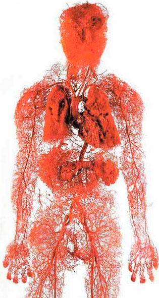
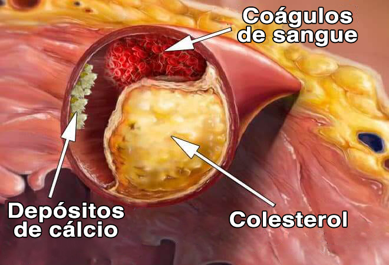

Inchaço, dor e cãibras musculares nas pernas: 3 gatilhos de tiro certeiro para vasos bloqueados. Como tratá-los em casa?
21:46,
OS SEUS PÉS INCHAM AO FIM DO DIA? OS SEUS TORNOZELOS E BEZERROS ESTÃO INCHADOS? INCHAÇO DAS PERNAS E TORNOZELOS É ALGO CHAMADO EDEMA VASCULAR, QUANDO VASOS SANGUÍNEOS COM PAREDES FRACAS FICAM BLOQUEADOS E VAZAM LÍQUIDO PARA O TECIDO CIRCUNDANTE. AS DORES E CÃIBRAS MUSCULARES DAS PERNAS ANDAM DE MÃOS DADAS COM O INCHAÇO, TUDO CAUSADO PELA FALTA DE FORNECIMENTO DE SANGUE.
Todos Sabem que a Tensão Arterial, o AVC e o Enfarte são o Resultado dos Vasos Entupidas com Colesterol. Estas são doenças cardiovasculares, mas muito poucas pessoas percebem que esta é apenas a ponta do iceberg. "Vasos sanguíneos entupidos Causa 9 de 10 Doenças Crónicas Consideradas Incuráveis.
Dores de cabeça, picos de pressão sanguínea. Articulações Inquieto, dor e estalido, rigidez do pescoço e rigidez das costas. Os pés inchados à noite e o rosto inchado de manhã. Anelar nos ouvidos. Dedos Formigueiros e Membros Frios. Perda de nitidez da visão. A Memória Piora. Não é suficientemente forte para nada. Muitos dirão que é velhice. Mas não é.
Porque é que os vasos sanguíneos são responsáveis por 90% da sua saúde?
O que mais suja os seus vasos sanguíneos, para além do colesterol?
4 sinais óbvios de problemas vasculares e 7 mais escondidos
Como limpar com segurança os vasos sanguíneos em casa?
Estas perguntas foram respondidas pelo chefe do Departamento de Cirurgia Vascular, professor, um neurocirurgião praticante galardoado no Hospital Clínico de Lisboa, Dr. Estéfano Andrade.

O Dr. Estéfano Andrade já realizou mais de 11.000 operações no cérebro. O seu paciente mais novo tinha apenas 2 dias de vida.
O Dr. Andrade é hábil em explicar processos médicos complexos em palavras simples. Escreveu 45 livros e manuais de ciência populares para pessoas não médicas. Ele está absolutamente convencido de que os nossos vasos sanguíneos são responsáveis por 90% da saúde do nosso corpo e que o nosso bem-estar depende da sua limpeza e permeabilidade.
Porque é que os vasos sanguíneos representam 90% da nossa saúde?
- Dr. Andrade, está a dizer que 90% da saúde do nosso corpo depende dos nossos vasos sanguíneos? Porquê?
- Qual é o maior órgão do corpo humano? Poucas pessoas sabem. Mesmo os estudantes de medicina estão frequentemente enganados. Os mais comuns são o cérebro e o fígado. Os mais instruídos dizem que é a pele. Mas na realidade, o maior órgão é o nosso sistema cardiovascular.
2.5
voltas ao mundo podem ser feitas com os vasos sanguíneos de uma pessoa.

voltas ao mundo podem ser feitas com os vasos sanguíneos de uma pessoa.
Imaginem só. Se "pegar" em todos os recipientes do corpo humano e os ligar a um fio longo contínuo, o comprimento desse fio seria de aproximadamente 100.000 quilómetros.
Para ser mais claro, o comprimento do equador da Terra faz 40 000 quilómetros. Acontece que os vasos sanguíneos de apenas 1 pessoa são suficientes para circum-navegar o planeta 2,5 vezes.
O que pensa desta escala?
Os vasos não são apenas tubos através dos quais flui sangue. São um órgão complexo e interligado, se tiverem um problema, adoecerão imediatamente.
Problemas vasculares nas pernas - varizes, inchaço constante e peso nas pernas, sensação de congelação ou de ardor insuportável. Fissuras no calcanhar. Pobre circulação sanguínea: sem proteção contra bactérias, fungos. As unhas ficam ásperas e engrossadas.
Os vasos que alimentam o fígado ficam bloqueadas -
esteatose. Amargura na boca. Se comer alguns alimentos gordurosos, arrota e sente um sabor amargo na boca.
Vasos enfraquecidos e entupidos nas juntas -
a cartilagem seca. As articulações rangem e doem, começa-se a sofrer de osteocondrose, aparecem hérnias.
Os vasos rectal perdem o tom - os nós hemorroidários florescem com grumos.
Vasos oculares -
dificuldade de visão, palpitação nos olhos, desfocagem. Desenvolvem-se as cataratas. A reabsorção dos olhos, muitas vezes escrita como exérese excessiva, é na realidade uma micro hemorragia - rutura dos mais pequenos capilares do olho.
Perturbações circulatórias no cérebro - tonturas, tinido e esquecimento frequente. Alguma vez esteve na cozinha, foi a algum lado e esqueceu-se porquê. Ou uma palavra familiar está na sua língua, mas não se consegue lembrar dela. Todos estes são sinais de deterioração da vascularidade cerebral.
E, é claro, a rainha dos problemas vasculares é a Hipertensão. E a hipertensão é a mãe do AVC e a irmã do ataque cardíaco.
Os vasos sanguíneos são o nosso sistema alimentar, ao longo dos vasos sanguíneos, move a própria vida. Bloqueie uma parte importante da estrada e a sua vida para.
Os vasos sanguíneos "entupidos" condenam todos os órgãos à inanição.
O excesso de peso
está intimamente ligado aos vasos sanguíneos. Se os seus vasos sanguíneos estiverem obstruídos com colesterol e, como resultado, os seus órgãos passarem fome, os seus vasos sanguíneos não os podem fornecer com a quantidade certa de nutrientes. Assim, o cérebro envia sinais para comer. E a pessoa come. No entanto, os órgãos não estão a receber os nutrientes necessários devido à obstrução dos vasos sanguíneos. O cérebro dá novamente o sinal - é preciso comer. E assim por diante, num círculo vicioso.
Daí o desejo de mastigar, o desejo de doces e gordura - o corpo exige calorias.
Quando os meus colegas dizem aos seus pacientes: "Tem hipertensão porque está acima do peso", confundem causa e efeito. A hipertensão não é causada por excesso de peso. E estar acima do peso está presente porque se é hipertenso.
Pode continuar o famoso ditado "Não se pode ser feliz sem saúde" - "E não se pode ser saudável sem vasos sanguíneos limpos".
Por isso, nunca me cansarei de repetir: se quiser viver a vida ao máximo, limpe e regenere os seus vasos. Os vasos sanguíneos limpos são a forma de se livrar de 90% das doenças crónicas, algumas das quais são consideradas "incuráveis".
O que mais polui os vasos sanguíneos para além do colesterol
"Todos sabem que o colesterol é perigoso. É a que obstrui os nossos vasos sanguíneos, estreitando o lúmen e prejudicando a circulação sanguínea. Existe outro culpado?

6.2 kg
- A massa total de impurezas que se acumulam nos nossos vasos sanguíneos até à idade de 50 anos.
Colesterol
"Sim, tem razão". As placas de colesterol, ou "placas ateroscleróticas", representam cerca de 65-70% da poluição dos vasos sanguíneos.
Aos 50 anos, cerca de 5kg de placas de colesterol acumulam-se nos vasos sanguíneos de uma pessoa. Os depósitos de colesterol reduzem o lúmen dos vasos sanguíneos 4-5 vezes.
Imagine que se o lúmen normal de um vaso sanguíneo tiver cerca de meio dedo de largura, então 5 kg de placas de colesterol reduzem o lúmen para o tamanho de dois fósforos.
As placas de colesterol em si não são fatais. Sim, reduz a qualidade de vida, aumenta a pressão arterial, dores de cabeça, dores nas articulações, fraqueza e apatia. Mas muito mais perigosa é a massa de coágulos de sangue, que também se acumulam nos nossos vasos sanguíneos.
Massa de coágulos de sangue
Um coágulo de sangue acumula significativamente menos massa: "apenas" cerca de 800 g - 1 kg.
O seu perigo, porém, é que sejam instáveis. Um coágulo de sangue pode romper-se e entupir um vaso sanguíneo em qualquer altura.
Se o coágulo for suficientemente grande, "obstrui" permanentemente o vaso sanguíneo. Obtém-se isquemia - a cessação completa do fornecimento de sangue ao órgão que alimenta aquele recipiente.
Um AVC isquémico é um bloqueio de um vaso sanguíneo no cérebro. Um ataque cardíaco é um bloqueio numa artéria do coração. Isquemia hepática, colapso pulmonar, insuficiência renal. As hemorroidas não são mais do que a isquemia dos vasos rectos. O bloqueio mesmo de pequenos vasos nas pernas acaba por causar necrose, gangrena.
Óxido de cálcio
O óxido de cálcio nos vasos sanguíneos é um resíduo de preparações químicas e aditivos alimentares. Cerca de 300-400 gramas acumulam-se até à idade de 50 anos. Acumula-se mais nos vasos sanguíneos do cérebro.
O perigo é que o óxido tenha uma estrutura afiada e cristalina. No caso de uma constrição abrupta - um espasmo causado por stress ou tensão física, ou condições atmosféricas, o cristal agudo pode perfurar o vaso e causar o seu rebentamento. E uma rutura de um vaso cerebral leva a um derrame hemorrágico.
4 sinais óbvios de problemas vasculares e 7 mais escondidos
- Quais são os sintomas de que os nossos vasos sanguíneos estão obstruídos com 'escória'? Como é que sabemos que o nosso corpo está a gritar: "Limpem já os vossos vasos sanguíneos"?
- Honestamente, se tiver mais de 45 anos e nunca tiver tomado um medicamento de limpeza vascular, garanto-lhe que tem um problema vascular.
A idade de 45 anos
é o ponto de viragem após o qual se precisa de uma limpeza vascular.
O bloqueio dos vasos sanguíneos com colesterol, coágulos sanguíneos, calcificação é essencialmente um processo natural de envelhecimento. É claro que a comida moderna, as drogas, o fumo e o álcool aceleram o processo de "entupimento" em 5-8 vezes. Mas somos todos humanos e não há para onde ir, continuamos a viver num mundo assim.
O principal sinal de contaminação vascular
Se lhe for diagnosticada hipertensão, poderá nem sequer ouvir. A hipertensão é a rainha dos maus vasos sanguíneos.
Sofre de tensão arterial elevada? A sua tensão arterial está constantemente a subir e precisa de tomar medicamentos? Deus nos livre, ainda tem 30% de lúmen nos seus vasos sanguíneos. O resto é densamente coberto com placas de colesterol, coágulos sanguíneos - tromboses e depósitos de cálcio.
Portanto, mesmo o mais pequeno stress, alterações climáticas, uma tempestade magnética afeta instantaneamente a saúde humana. A sua pressão arterial sobe, a sua cabeça começa a latejar, e as suas articulações doem.
Quatro doenças causadas por problemas nos vasos sanguíneos:
-
1. Hipertensão arterialTensão arterial elevada instável ou persistente que requer medicação. O indicador principal e mais importante. Já lhe foi diagnosticada hipertensão? São os vasos sanguíneos que estão a gritar: "Limpem-nos!"
-
2. VarizesVeias das pernas desagradavelmente inchadas, peso e dor, inchaço. O colesterol e coágulos sanguíneos obstruem as válvulas venosas. Gradualmente aparecem "capilares em forma de estrela", que depois se tornam uma "rede". A rede desenvolve-se então em veias varicosas.
-
3. HemorroidasQuando os vasos sanguíneos no recto ficam obstruídos, as hemorroidas incham. Se os vasos sanguíneos forem bloqueados primeiro, ocorrem fissuras anais.
-
4. OsteocondroseIsto é uma falta de fluxo de sangue para a cartilagem. A cartilagem endurece e começa a desgastar-se, não deixando tempo para reparações. Eles não se regeneram e secam. Perdem a sua capacidade de amortecer e reparar facilmente. Os sais não são eliminados e começam a crescer de forma incontrolável e levam a danos irreversíveis.
7 sintomas sugestivos
-
1. inchaçoOs recipientes contaminados não conseguem acompanhar o bombeamento de fluidos. A troca água-sal é perturbada. Os pés estão tão inchados no final do dia que as meias começam a beliscar os tornozelos, deixando marcas na pele. Rosto inchado e sacos debaixo dos olhos. Dedos que não podem ser removidos dos seus anéis. O inchaço do abdómen indica inchaço dos órgãos internos.
-
2. Anelar nos ouvidosDesde um som de rangido fraco a um zumbido alto que torna difícil a concentração. Isto deve-se ao aumento da pressão sobre o tímpano pelos vasos sanguíneos no cérebro.
-
3. VertigemUma sensação de vertigem na cabeça, um início repentino de vertigem, é uma indicação de que o seu aparelho vestibular está "a morrer de fome". Muitas vezes, a audição é também afetada.
-
4. InsóniaSente-se sonolento e cansado quando vai para a cama e não pode adormecer até de manhã? Isto deve-se a um fornecimento insuficiente de sangue para a glândula pituitária. Cessa a produção de melatonina, a hormona do sono.
-
5. FadigaNão tem energia nenhuma. Não quer fazer nada. Só se quer comer e deitar. Esta sensação ocorre porque o seu corpo entra no modo de poupança de energia. Os seus órgãos não estão a receber nutrição suficiente através dos vasos sanguíneos doentes e o seu corpo tende a minimizar a atividade de modo a não morrer.
-
6. Anormalidades visuaisCintilação à frente dos olhos, palpitação, visão desfocada. Estes são sintomas de dificuldade de circulação sanguínea nos olhos.
-
7. Dor nas articulaçõesQuando o tempo está mau, experimenta dores nas articulações. Quando se acorda de manhã, não se sente acordado e descansado, mas sim rígido e semiparalisado. Leva algum tempo para que as articulações, que não se conseguem mexer depois de dormir, voltem a entrar no tom. Isto significa que o líquido sinovial perde as suas propriedades e adere às articulações.
Tem algum destes sintomas? Os vasos sanguíneos estão desesperadamente ansiosos por serem limpos e reabastecidos.
Na maioria das vezes, as pessoas têm vários sintomas ao mesmo tempo em várias combinações. E por vezes tudo ao mesmo tempo.
As pessoas tentam tratar cada condição individualmente. Comprimidos para a tensão arterial elevada, pomadas para varizes, supositórios para hemorroidas, géis para osteocondrose. E, claro, analgésicos, analgésicos, analgésicos...
Eles apenas gastam muito dinheiro em farmácias. Porque a causa de todas as doenças é a mesma - obstrução dos vasos sanguíneos. E é necessário começar com uma limpeza geral dos recipientes.
Como limpar os vasos de colesterol, coágulos sanguíneos e calcificação?
- Vamos dar conselhos médicos específicos, por exemplo, pegue numa mulher chamada, digamos, Joana Pereira. 57 anos de idade, casada, com excesso de peso, hipertenso e varizes. Ela reage ao tempo com a precisão de um barómetro - as suas articulações doem, sente-se cansada e sonolenta, e tem uma dor de cabeça.
- Como ajudar Joana? Como limpar os vasos sanguíneos, não ir a todos os médicos, apenas ouvir moralidades como "Tens de perder peso", "Tens de começar a fazer exercício", "Tens de comer bem", "Tudo vem da idade" e outras coisas do género?
A maioria dos medicamentos não cura nem ajuda, mas aleijam e viciam.
- Sim, a medicina nas nossas regiões, infelizmente, é coxa em ambas as pernas. É por isso que compreendo perfeitamente a relutância em ir aos médicos. Mas Joana pode fazê-lo ela própria.
Para uma limpeza vascular segura, posso mencionar apenas um produto com uma reputação impecável - o nutracêutico Cardiofort. O Cardiofort prolonga a sua vida por 11-17 anos, enchendo-a de energia e leveza, em vez de sofrimento e perda de vitalidade.
É tão seguro como o chá de ervas. E por eficácia
só fica atrás da limpeza vascular cirúrgica
com um stent. Mas ao contrário da cirurgia, não tem complicações ou efeitos secundários. O curso limpa todos os vasos do corpo. Desde as artérias grandes e grossas até aos mais pequenos capilares finos.
Cardiofort é uma mistura de extratos de plantas em forma de gotículas, despertando as moléculas vivas em contacto com a água. Estes extratos de limpeza suave lavam o muco do colesterol, coágulos de sangue colados às paredes - trombose, placa de cálcio - resíduos de medicamentos fora dos vasos sanguíneos. Qualquer coisa que interfira com o livre fluxo de sangue.
Acumulado ao longo dos anos, envenenou a sua vida, lavou Cardiofort 1,5-2 meses de uso regular.
Em 1,5 meses, o Cardiofort dissolve e remove 4 kg de placas de colesterol. Liquefaz 900 g - 1 kg de massas trombóticas e lava 350-400 g de depósitos de cálcio.
Juntamente com eles, as dores de cabeça desaparecem e o zumbido dissipa-se. O cérebro, recebendo uma nutrição adequada através de vasos limpos, trabalha com a velocidade de um supercomputador. Os pensamentos são claros e precisos.
Os sentidos são despertados para ouvir sons agradáveis que não se notou antes. A audição melhora, pode até ouvir uma conversa calma na sala ao lado.
Os cheiros assumem um novo aspeto. Acabou-se o nariz entupido, as constipações crónicas e as alergias. Os brônquios estão dilatados. A respiração é suave e livre. O ar fresco que enche os seus pulmões espalha-se em ondas agradáveis por todo o seu corpo, causando uma sensação de ligeira euforia.
Os gostos tornam-se brilhantes e ricos. A comida de cada dia é extraordinariamente satisfatória. Come menos, mas fica mais cheio. Desaparecem os desejos constantes por doces e produtos cozinhados.
As juntas agradecem. porque já não doem. A trituração desaparece completamente, substituída por movimentos suaves, graças à lubrificação renovada das articulações. É como se o motor tivesse sido cheio com óleo novo e o líquido preto e sujo cheio de aparas de metal tivesse sido substituído por um novo óleo transparente que proporciona uma lubrificação perfeita.
- Impressionante. Honestamente, esta é a primeira vez que ouço falar de
Cardiofort.
Já ouvi falar de nutracêuticos em geral. No Japão e em Israel legislaram o estatuto dos nutracêuticos como um tratamento preferencial. Mas em Portugal ainda são tratados com desconfiança.
- A nossa Joana tentou provavelmente centenas de suplementos e comprimidos diferentes e prometeu a si própria não gastar dinheiro em milagres duvidosos.
As nossas dúvidas são traidores, fazem-nos perder muito do que poderíamos ter conseguido por medo de tentar.
"Deixem-me contar-vos uma história cautelosa sobre a desconfiança.
Em 1928, foi inventado o primeiro antibiótico: a penicilina.
Curava facilmente disenteria e febre tifoide, da qual as pessoas morriam inevitavelmente na altura.
Mas a maioria das pessoas não acreditava que pudesse ajudar, pois já tinham tentado 1000 vezes sem sucesso curá-lo. Os curados foram aqueles que tinham tentado 1.000 vezes e não tinham medo de tentar 1.001 vezes. E aqueles que desistiram estavam a atirar à volta das palavras "Outra cura milagrosa que não vai ajudar" e a morrer, apesar de a salvação estar mesmo à frente dos seus narizes.
Como antes, a penicilina conquistou doenças comuns na altura: disenteria, febre tifoide e peste pneumónica. Assim, com o tempo, o Cardiofort
eliminará as doenças vasculares.
Os primeiros passos já foram dados - Japão, Canadá, Coreia, Suíça e Israel aprovaram leis sobre limpeza vascular com nutracêuticos em vez de terapia medicamentosa.
Em Portugal, o Cardiofort
é oficialmente prescrito num único local - num centro médico privado na capital. Onde apenas pessoas muito abastadas podem pagar o tratamento. O tratamento é efetuado de acordo com protocolos israelitas e não com as nossas diretrizes clínicas. Assim, os pacientes desfrutam dos resultados e não do processo interminável de recuperação.
Os nossos médicos sugerem que o resto dos nossos cidadãos seja tratado com medicamentos químicos que são fabricados em fábricas pertencentes a estas elites.
- Também eu acredito que a dúvida é o nosso pior inimigo, por isso não tenho medo de experimentar coisas novas.
Quando saturados com humidade e oxigénio, os extratos cicatrizantes assumem o efeito do peróxido de hidrogénio - oxigenação.
As moléculas de Cardiofort
são pequenas bombas de oxigénio. Destroem os depósitos de colesterol nos vasos sanguíneos e facilitam o fluxo de sangue.
O efeito da oxigenação consiste em acelerar a absorção das moléculas de cura, enriquecendo-as com oxigénio.
É por isso que Cardiofort é tão eficaz - está a beber extratos vivos ativos. Enquanto que os medicamentos só lhe dão esqueletos moleculares esterilizados passivos.
A acção do peróxido proporciona uma absorção imediata das moléculas vivas. Os extratos enriquecidos com oxigénio são facilmente absorvidos pelas paredes do esófago. Portanto, o Cardiofort não causa azia, amargura na boca, arroto, não irrita os intestinos e protege o estômago. Podem tomar Cardiofort até as pessoas que sofrem de úlceras.
Elimina as destruições
O óleo de colza ajuda a reparar os danos. As moléculas de colza removem as partículas de colesterol presas às paredes dos vasos. A passagem para o livre fluxo de sangue é libertada. Os órgãos começam finalmente a nutrir-se. A cartilagem ganha vida, fica saturada com humidade e oxigénio, o mecanismo de autorrenovação é activado. A elasticidade é restaurada. Os rangidos e estalidos no pescoço, costas e articulações desaparecem. Quando o tempo mudar, deixará de sentir dores nos joelhos e nos dedos.
Cardiofort é um tesouro de extratos medicinais raros que trabalham em harmonia para manter os vasos sanguíneos limpos e fortes.
O inchaço desaparece. Mesmo depois de passar o dia todo em pé - não incham.
O fluxo de sangue para a pele é restaurado - a vasculatura e as veias de aranha desaparecem. As veias varicosas diminuem gradualmente, as hemorroidas secam.
Dá energia
As moléculas de Kumquat entram em jogo. Apanham as partículas de colesterol "quebradas" e quando se fundem com elas, transformam-se em lipoproteínas benéficas de alta densidade envolvidas na quebra das gorduras.
Cardiofort entram em jogo. Apanham as partículas de colesterol "quebradas" e quando se fundem com elas, transformam-se em lipoproteínas benéficas de alta densidade envolvidas na quebra das gorduras.
Alivia as cãibras
O extrato de lúpulo alivia os espasmos vasculares. É uma "valeriana" para os vasos sanguíneos. Acalma e relaxa os vasos sanguíneos contraídos devido à falta de fluxo sanguíneo. A tensão arterial regressa ao normal de forma suave e segura. As dores de cabeça desapareceram, os zumbidos baixam, os pulmões e os brônquios funcionam de forma suave e fácil. Acabou-se a sensação de falta de ar.
Alivia o coração
O extrato de coração de mãe-malte dissolve coágulos de sangue, tromboses e até pequenos aneurismas. Elimina os depósitos de cálcio nos vasos sanguíneos formados após a ingestão de produtos químicos.
O coração começa a trabalhar com facilidade. O seu batimento cardíaco torna-se lento e medido. Já não será incomodado por arritmias e taquicardia. O formigueiro repentino no peito causado pela sobrecarga do coração não se repete, esquecê-lo-á para sempre.
O risco de um ataque cardíaco cai para zero.
Restaura os vasos
Folhas e flores de espinheiro-do-mar
remendem as paredes dos vasos sanguíneos. Os micro-danos, os locais onde os vasos sanguíneos são suscetíveis de rebentar, são selados com moléculas de espinheiro-do-mar como um autocolante. O cérebro está bem protegido contra o AVC. As suas células recebem nutrição e oxigénio, tem uma agradável sensação de leveza e frescura da cabeça.
Efeito borboleta
O Cardiofort
é como uma asa de borboleta que desencadeia uma reação em cadeia de mudanças de cortar a respiração. Começando a limpar os vasos sanguíneos passo a passo da sujidade acumulada ao longo de décadas,
Cardiofort desencadeia uma reação em cadeia de regeneração do seu corpo
Um mês de tratamento com Cardiofort é como nascer de novo.
Acorda facilmente
Acordas de manhã e sais facilmente da cama - não precisas de te forçar a levantar, esticando e esfregando as pernas cansadas, com rangidos nas costas e no pescoço
O seu corpo está cheio de energia e força pela manhã, porque os seus vasos sanguíneos estão completamente limpos e todos os seus órgãos foram nutridos e descansados durante a noite. Nenhuma parte do corpo estava esfomeada de fornecimento de sangue, ganhando energia para o novo dia.
Pequeno almoço delicioso
Come-se uma sanduíche com uma espessa camada de manteiga e bacon cor-de-rosa crocante ao pequeno-almoço - e o fígado e o estômago digerem-nas facilmente. Sem arrotos amargos, sem dores abdominais. O Cardiofort limpou os vasos que alimentam o estômago, agora pode absorver até mesmo um prego.
Poder heroico
Quando sai de casa, já não tem de se preocupar com os pés - não vê o andar como um fardo, pode andar o dia inteiro e os pés não se cansam nem incham. Sandálias, sapatos e meias não cortam nos seus pés inchados como uma corda num salame.
Totalmente relaxado
Está absolutamente calmo e relaxado. Já não está em constante dor que consome a sua mente, impedindo-o de se concentrar em qualquer outra coisa. Quando nada dói, coisas familiares, sons e cheiros brincam com cores novas e há muito esquecidas.
Energia invejável
Mesmo depois de um dia de trabalho duro, vai-se para casa com uma mente clara e alerta. O seu cérebro funciona como um relógio suíço, por isso nunca está demasiado cansado.
Uma boa noite de sono
Por isso, deitado na cama, adormece imediatamente. Antes, estava enrolado na cama a meio da noite, incapaz de voltar a dormir. Agora, diz-lhe para voltar a dormir, e o seu corpo obedece ao seu comando.
Programa de Descontos
- Sabe-se que o Cardiofort desapareceu da maioria das farmácias? Porquê?
- Infelizmente, sim. Desde o início deste ano, o Cardiofort já não está disponível nas farmácias.
O conflito foi causado pela ganância das cadeias de farmácias que exigiram 38 euros
ao fabricante de Cardiofort para cada unidade vendida! Ao aumentar o preço do fabricante e fazer uma enorme margem de lucro (o preço de um único prato de Cardiofort em algumas farmácias chegou a atingir 180 euros), os farmacêuticos pediram encargos adicionais ao fabricante.
Os proprietários de farmácias argumentaram que este pagamento extra iria ajudá-los a sobreviver. Afinal, após limpeza vascular com Cardiofort, as pessoas já não precisariam da medicação que tinham tomado durante todo esse tempo! As pessoas deixarão de comprar medicamentos para a tensão arterial elevada e deixarão de comprar medicamentos para as dores articulares. Isto reduzirá grandemente o consumo de medicamentos para a asma e a diabetes. Isto conduzirá a perdas para as farmácias. Por conseguinte, é necessário determinar o preço máximo possível de
Cardiofort.
Como resultado, o fabricante de Cardiofort cortou todos os contratos com todas as farmácias e passou a vender apenas em linha. Em princípio, esta é a coisa certa a fazer. Julgue por si próprio: não tem de pagar renda em locais de venda a retalho, não tem de subornar farmácias para vender os seus medicamentos lá. Por conseguinte, Cardiofort é muito mais acessível agora do que quando era vendido em farmácias.
Campanha do fabricante de Cardiofort para os residentes de Portugal "Vasos Sanguíneos Limpos".

O nosso instituto em conjunto com o fabricante de Cardiofort lançou uma campanha para o produto no âmbito de um projeto de telemedicina (medicina na Internet).
Qualquer pessoa pode candidatar-se e receber Cardiofort
ao novo preço reduzido de
39 euros!
- O que tenho de fazer para obter o produto com desconto?
- Para encomendar Cardiofort como parte da promoção, deve cumprir as seguintes condições:
Condições para receber Cardiofort:
-
Encomenda «Cardiofort» para uso pessoalO Cliente e o Destinatário devem ser o mesmo. Isto é necessário para combater os distribuidores que tentam comprar Cardiofort a granel e revendê-lo a uma margem extra.
-
Preencher o formulário de candidatura
O formulário de pedido oficial garante o preço ao produtor e protege contra os distribuidores
- Quanto tempo durará o programa de descontos?
"Até que o lote de Cardiofort se esgote." Mas a droga está completamente esgotada em 3-4 semanas. E isto apesar do facto de não haver publicidade na televisão e rádio. As pessoas passam a informação umas às outras, recomendam-na a amigos e familiares. Até nós ficámos surpreendidos por a informação sobre Cardiofort se ter espalhado tão rapidamente. O último dia para o preço com desconto de Cardiofort é , inclusive.
Recomendo, portanto, que se candidate a Cardiofort o mais depressa possível. Não haverá definitivamente uma repetição do programa este ano.
A promoção é válida até , inclusive, mas ainda restam
21 unidades
Formulário oficial de candidatura
№29 982 de 30 000 para
Receber Cardiofort a preço preferencial
39€78€
39€
Para receber Cardiofort com 50% de desconto, introduza o seu nome e número de telefone de contacto nos campos abaixo e clique em ENCOMENDAR
*Os seus dados são enviados diretamente para o fabricante. Ninguém mais tem acesso a ele.